2.3.3 Other Shapes

|
|
2.3.2 Polygon Based Shapes |
POV-Ray 3.6 for UNIX documentation 2.3.3 Other Shapes |
2.3.4 Advanced Texture Options |
|
Blobs are described as spheres and cylinders covered with "goo" which stretches to smoothly join them (see section "Blob").
Ideal for modeling atoms and molecules, blobs are also powerful tools for creating many smooth flowing "organic" shapes.
A slightly more mathematical way of describing a blob would be to say that it is one object made up of two or more component pieces. Each piece is really an invisible field of force which starts out at a particular strength and falls off smoothly to zero at a given radius. Where ever these components overlap in space, their field strength gets added together (and yes, we can have negative strength which gets subtracted out of the total as well). We could have just one component in a blob, but except for seeing what it looks like there is little point, since the real beauty of blobs is the way the components interact with one another.
Let us take a simple example blob to start. Now, in fact there are a couple different types of components but we will look at them a little later. For the sake of a simple first example, let us just talk about spherical components. Here is a sample POV-Ray code showing a basic camera, light, and a simple two component blob:
#include "colors.inc"
background{White}
camera {
angle 15
location <0,2,-10>
look_at <0,0,0>
}
light_source { <10, 20, -10> color White }
blob {
threshold .65
sphere { <.5,0,0>, .8, 1 pigment {Blue} }
sphere { <-.5,0,0>,.8, 1 pigment {Pink} }
finish { phong 1 }
}
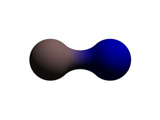
The threshold is simply the overall strength value at which the blob becomes visible. Any points within the blob where the strength matches the threshold exactly form the surface of the blob shape. Those less than the threshold are outside and those greater than are inside the blob.
We note that the spherical component looks a lot like a simple sphere object. We have the sphere keyword, the vector representing the location of the center of the sphere and the float representing the radius of the sphere. But what is that last float value? That is the individual strength of that component. In a spherical component, that is how strong the component's field is at the center of the sphere. It will fall off in a linear progression until it reaches exactly zero at the radius of the sphere.
Before we render this test image, we note that we have given each component a different pigment. POV-Ray allows blob components to be given separate textures. We have done this here to make it clearer which parts of the blob are which. We can also texture the whole blob as one, like the finish statement at the end, which applies to all components since it appears at the end, outside of all the components. We render the scene and get a basic kissing spheres type blob.
The image we see shows the spheres on either side, but they are smoothly joined by that bridge section in the center. This bridge represents where the two fields overlap, and therefore stay above the threshold for longer than elsewhere in the blob. If that is not totally clear, we add the following two objects to our scene and re-render. We note that these are meant to be entered as separate sphere objects, not more components in the blob.
sphere { <.5,0,0>, .8
pigment { Yellow transmit .75 }
}
sphere { <-.5,0,0>, .8
pigment { Green transmit .75 }
}
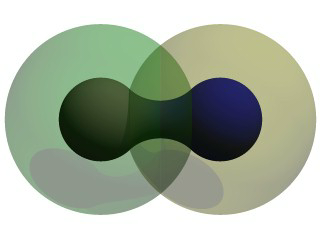
Now the secrets of the kissing spheres are laid bare. These semi-transparent spheres show where the components of the blob actually are. If we have not worked with blobs before, we might be surprised to see that the spheres we just added extend way farther out than the spheres that actually show up on the blobs. That of course is because our spheres have been assigned a starting strength of one, which gradually fades to zero as we move away from the sphere's center. When the strength drops below the threshold (in this case 0.65) the rest of the sphere becomes part of the outside of the blob and therefore is not visible.
See the part where the two transparent spheres overlap? We note that it exactly corresponds to the bridge between the two spheres. That is the region where the two components are both contributing to the overall strength of the blob at that point. That is why the bridge appears: that region has a high enough strength to stay over the threshold, due to the fact that the combined strength of two spherical components is overlapping there.
The shape shown so far is interesting, but limited. POV-Ray has a few extra tricks that extend its range of usefulness however. For example, as we have seen, we can assign individual textures to blob components, we can also apply individual transformations (translate, rotate and scale) to stretch, twist, and squash pieces of the blob as we require. And perhaps most interestingly, the blob code has been extended to allow cylindrical components.
Before we move on to cylinders, it should perhaps be mentioned that the old style of components used in previous versions of POV-Ray still work. Back then, all components were spheres, so it was not necessary to say sphere or cylinder. An old style component had the form:
component Strength, Radius, <Center>
This has the same effect as a spherical component, just as we already saw above. This is only useful for backwards compatibility. If we already have POV-Ray files with blobs from earlier versions, this is when we would need to recognize these components. We note that the old style components did not put braces around the strength, radius and center, and of course, we cannot independently transform or texture them. Therefore if we are modifying an older work into a new version, it may arguably be of benefit to convert old style components into spherical components anyway.
Now for something new and different: cylindrical components. It could be argued that all we ever needed to do to make a roughly cylindrical portion of a blob was string a line of spherical components together along a straight line. Which is fine, if we like having extra to type, and also assuming that the cylinder was oriented along an axis. If not, we would have to work out the mathematical position of each component to keep it is a straight line. But no more! Cylindrical components have arrived.
We replace the blob in our last example with the following and re-render. We can get rid of the transparent spheres too, by the way.
blob {
threshold .65
cylinder { <-.75,-.75,0>, <.75,.75,0>, .5, 1 }
pigment { Blue }
finish { phong 1 }
}
We only have one component so that we can see the basic shape of the cylindrical component. It is not quite a true cylinder - more of a sausage shape, being a cylinder capped by two hemispheres. We think of it as if it were an array of spherical components all closely strung along a straight line.
As for the component declaration itself: simple, logical, exactly as we would expect it to look (assuming we have been awake so far): it looks pretty much like the declaration of a cylinder object, with vectors specifying the two endpoints and a float giving the radius of the cylinder. The last float, of course, is the strength of the component. Just as with spherical components, the strength will determine the nature and degree of this component's interaction with its fellow components. In fact, next let us give this fellow something to interact with, shall we?
Beginning a new POV-Ray file, we enter this somewhat more complex example:
#include "colors.inc"
background{White}
camera {
angle 20
location<0,2,-10>
look_at<0,0,0>
}
light_source { <10, 20, -10> color White }
blob {
threshold .65
sphere{<-.23,-.32,0>,.43, 1 scale <1.95,1.05,.8>} //palm
sphere{<+.12,-.41,0>,.43, 1 scale <1.95,1.075,.8>} //palm
sphere{<-.23,-.63,0>, .45, .75 scale <1.78, 1.3,1>} //midhand
sphere{<+.19,-.63,0>, .45, .75 scale <1.78, 1.3,1>} //midhand
sphere{<-.22,-.73,0>, .45, .85 scale <1.4, 1.25,1>} //heel
sphere{<+.19,-.73,0>, .45, .85 scale <1.4, 1.25,1>} //heel
cylinder{<-.65,-.28,0>, <-.65,.28,-.05>, .26, 1} //lower pinky
cylinder{<-.65,.28,-.05>, <-.65, .68,-.2>, .26, 1} //upper pinky
cylinder{<-.3,-.28,0>, <-.3,.44,-.05>, .26, 1} //lower ring
cylinder{<-.3,.44,-.05>, <-.3, .9,-.2>, .26, 1} //upper ring
cylinder{<.05,-.28,0>, <.05, .49,-.05>, .26, 1} //lower middle
cylinder{<.05,.49,-.05>, <.05, .95,-.2>, .26, 1} //upper middle
cylinder{<.4,-.4,0>, <.4, .512, -.05>, .26, 1} //lower index
cylinder{<.4,.512,-.05>, <.4, .85, -.2>, .26, 1} //upper index
cylinder{<.41, -.95,0>, <.85, -.68, -.05>, .25, 1} //lower thumb
cylinder{<.85,-.68,-.05>, <1.2, -.4, -.2>, .25, 1} //upper thumb
pigment{ Flesh }
}
As we can guess from the comments, we are building a hand here. After we render this image, we can see there are a few problems with it. The palm and heel of the hand would look more realistic if we used a couple dozen smaller components rather than the half dozen larger ones we have used, and each finger should have three segments instead of two, but for the sake of a simplified demonstration, we can overlook these points. But there is one thing we really need to address here: This poor fellow appears to have horrible painful swelling of the joints!
A review of what we know of blobs will quickly reveal what went wrong. The joints are places where the blob components overlap, therefore the combined strength of both components at that point causes the surface to extend further out, since it stays over the threshold longer. To fix this, what we need are components corresponding to the overlap region which have a negative strength to counteract part of the combined field strength. We add the following components to our blob.
sphere{<-.65,.28,-.05>, .26, -1} //counteract pinky knucklebulge
sphere{<-.65,-.28,0>, .26, -1} //counteract pinky palm bulge
sphere{<-.3,.44,-.05>, .26, -1} //counteract ring knuckle bulge
sphere{<-.3,-.28,0>, .26, -1} //counteract ring palm bulge
sphere{<.05,.49,-.05>, .26, -1} //counteract middle knuckle bulge
sphere{<.05,-.28,0>, .26, -1} //counteract middle palm bulge
sphere{<.4,.512,-.05>, .26, -1} //counteract index knuckle bulge
sphere{<.4,-.4,0>, .26, -1} //counteract index palm bulge
sphere{<.85,-.68,-.05>, .25, -1} //counteract thumb knuckle bulge
sphere{<.41,-.7,0>, .25, -.89} //counteract thumb heel bulge
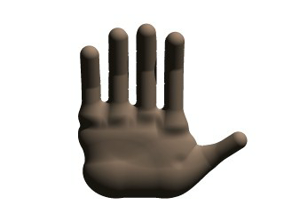
Much better! The negative strength of the spherical components counteracts approximately half of the field strength at the points where to components overlap, so the ugly, unrealistic (and painful looking) bulging is cut out making our hand considerably improved. While we could probably make a yet more realistic hand with a couple dozen additional components, what we get this time is a considerable improvement. Any by now, we have enough basic knowledge of blob mechanics to make a wide array of smooth, flowing organic shapes!
A height_field is an object that has a surface that is determined by the color value or palette index
number of an image designed for that purpose. With height fields, realistic mountains and other types of terrain can
easily be made. First, we need an image from which to create the height field. It just so happens that POV-Ray is
ideal for creating such an image.
We make a new file called image.pov and edit it to contain the following:
#include "colors.inc"
global_settings {
assumed_gamma 2.2
hf_gray_16
}
The hf_gray_16 keyword causes the output to be in a special 16
bit grayscale that is perfect for generating height fields. The normal 8 bit output will lead to less smooth surfaces.
Now we create a camera positioned so that it points directly down the z-axis at the origin.
camera {
location <0, 0, -10>
look_at 0
}
We then create a plane positioned like a wall at z=0. This plane will completely fill the screen. It will be colored with white and gray wrinkles.
plane { z, 10
pigment {
wrinkles
color_map {
[0 0.3*White]
[1 White]
}
}
}
Finally, create a light source.
light_source { <0, 20, -100> color White }
We render this scene at 640x480 +A0.1 +FT. We will get an image that will produce an
excellent height field. We create a new file called hfdemo.pov and edit it as follows:
Note: Windows users, unless you specify +FT as above, you will get a
.BMP file (which is the default Windows version output). In this case you will need to use sys instead of tga
in the height_field statement below.
#include "colors.inc"
We add a camera that is two units above the origin and ten units back ...
camera{
location <0, 2, -10>
look_at 0
angle 30
}
... and a light source.
light_source{ <1000,1000,-1000> White }
Now we add the height field. In the following syntax, a Targa image file is specified, the height field is smoothed, it is given a simple white pigment, it is translated to center it around the origin and it is scaled so that it resembles mountains and fills the screen.
height_field {
tga "image.tga"
smooth
pigment { White }
translate <-.5, -.5, -.5>
scale <17, 1.75, 17>
}
We save the file and render it at 320x240 -A. Later, when we are satisfied that the height field is
the way we want it, we render it at a higher resolution with anti-aliasing.
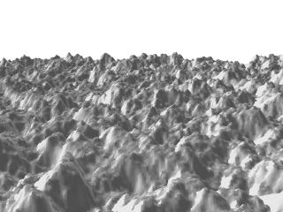
Wow! The Himalayas have come to our computer screen!
Isosurfaces are shapes described by mathematical functions.
In contrast to the other mathematically based shapes in POV-Ray, isosurfaces are approximated during rendering and therefore they are sometimes more difficult to handle. However, they offer many interesting possibilities, like real deformations and surface displacements
Some knowledge about mathematical functions and geometry is useful, but not necessarily required to work with isosurfaces.
For the start we will choose a most simple function: x The value of this function is exactly the
current x-coordinate.
The isosurface object takes this function as a user defined function:
isosurface {
function { x }
contained_by { box { -2, 2 } }
}
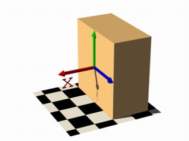
the resulting shape is fairly simple: a box.
The fact that it is a box is only caused by the container object which is required for an isosurface. You can either use a box or a sphere for this purpose.
So only one side of the box is made by the function in fact. This surface is where the x-coordinate is 0 since 0 is the default threshold. There usually is no reason to change this, since it is the most common and most suggestive value, but you can specify something different by adding
threshold 1
to the isosurface definition.
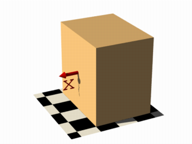
As you can see, the surface is now at x-coordinate 1.
We can also remove the visible surfaces of the container object by adding the word 'open' to the isosurface definition.
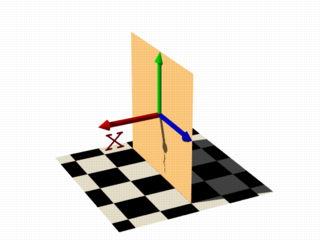
For making it clearer what surfaces are the actual isosurface and what are caused by the container object, the color will be different in all the following pictures.
Now we replace the used function with something different:
function { x+y }
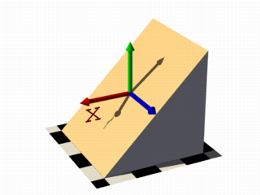
function { x+y+z }
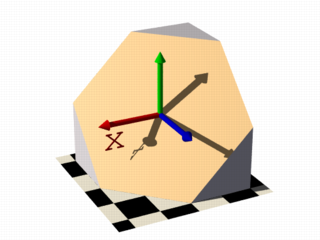
Note: 'max_gradient 4' is added to the isosurface definition here, this will be explained later on.
All these functions describe planes going through the origin. The function just describes the normal vector of this plane.
The following two functions lead to identical results:
function { abs(x)-1 }
function { sqrt(x*x)-1 }
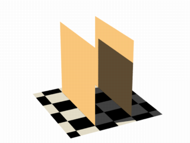
You can see that there are two planes now. The reason is that both formulas have the same two solutions (where the
function value is 0), namely x=-1 and x=1.
We can now mix all these elements in different combinations, the results always consist of plane surfaces:
function { abs(x)-1+y }
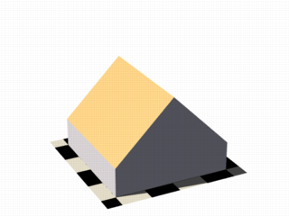
function { abs(x)+abs(y)+abs(z)-2 }
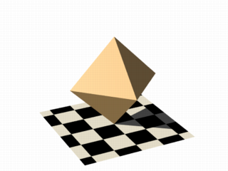
Curved surfaces of many different kinds can be achieved with non-linear functions.
function { pow(x,2) + y }
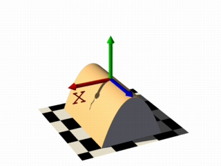
You can see the parabolic shape caused by the square function.
To get a cylindrical surface we can use the following function.
function { sqrt(pow(x,2) + pow(z,2)) - 1 }
In 2 dimensions it describes a circle, since it is constant in the 3rd dimension, we get a cylinder:
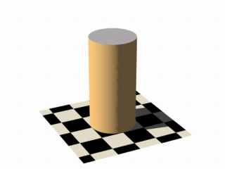
It is of course not difficult to change this into a cone, we just need to add a linear component in y-direction:
function { sqrt(pow(x,2) + pow(z,2)) + y }
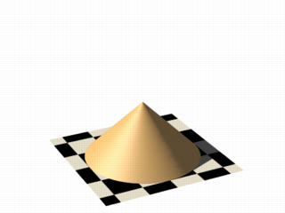
And we of course can also make a sphere:
function { sqrt(pow(x,2) + pow(y,2) + pow(z,2)) - 2 }
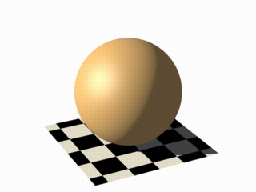
The 2 specifies the radius here.
As we have seen, the functions used to define the isosurface are written in the function {...} block.
Allowed are:
User defined functions (like equations). All float expressions and operators (see section "User-Defined
Functions") which are legal in POV-Ray, can be used.
With the equation of a sphere "x^2+y^2+z^2
= Threshold" we get:
isosurface {
function {pow(x,2) + pow(y,2) + pow(z,2)}
threshold Threshold
...
}
Functions can be declared first (see section "Declaring Functions") and then used in the isosurface.
#declare Sphere = function {pow(x,2) + pow(y,2) + pow(z,2)}
isosurface {
function { Sphere(x,y,z) }
threshold Threshold
...
}
By default a function takes three parameters (x,y,z) and you do not have to explicitly specify the parameter names
when declaring it.
When using the identifier, the parameters must be specified.
On the other
hand, if you need more or less than three parameters when declaring a function, you also have to explicitly specify
the parameter names.
#declare Sphere = function(x,y,z,Radius) {
pow(x,2) + pow(y,2) + pow(z,2) - pow(Radius,2)
}
isosurface {
function { Sphere(x,y,z,1) }
...
}
There are a lot of internal functions available in POV-Ray. For example a sphere could also be generated with function
{ f_sphere(x, y, z, 2) } These functions are declared in the functions.inc include file. Most of
them are more complicated and it is usually faster to use them instead of a hand coded equivalent. See the complete
list for details.
The following makes a torus just like POV-Ray's torus object:
#include "functions.inc"
isosurface {
function { f_torus(x, y, z, 1.6, 0.4) }
contained_by { box { -2, 2 } }
}
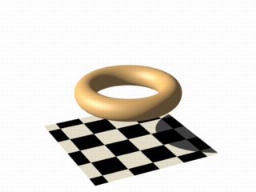
The 4th and 5th parameter are the major and minor radius, just like the corresponding values in the torus{}
object.
The parameters x, y and z are required, because it is a declared function. You can also declare functions yourself like it is explained in the reference section.
We can also simulate some Constructive Solid Geometry with isosurface functions. If you do not know about CSG we suggest you have a look at "What is CSG?" or the corresponding part of the reference section first.
We will take two functions: a cylinder and a rotated box:
#declare fn_A = function { sqrt(pow(y,2) + pow(z,2)) - 0.8 }
#declare fn_B = function { abs(x)+abs(y)-1 }
If we combine them the following way, we get a "merge":
function { min(fn_A(x, y, z), fn_B(x, y, z)) }
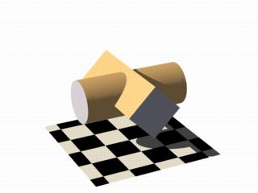
An "intersection" can be obtained by using max() instead of min():
function { max(fn_A(x, y, z), fn_B(x, y, z)) }
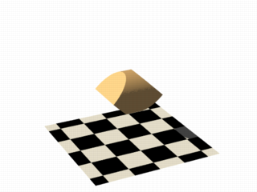
Of course also "difference" is possible, we just have to add a minus (-) before the second function:
function { max(fn_A(x, y, z), -fn_B(x, y, z)) }
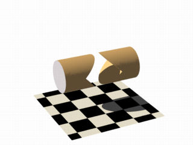
Apart from basic CSG you can also obtain smooth transits between the different surfaces (like with the blob object)
#declare Blob_threshold=0.01;
isosurface {
function {
(1+Blob_threshold)
-pow(Blob_threshold, fn_A(x,y,z))
-pow(Blob_threshold, fn_B(x,y,z))
}
max_gradient 4
contained_by { box { -2, 2 } }
}
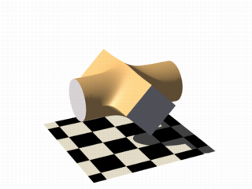
The Blob_threshold value influences the smoothness of the transit between the shapes. a lower value
leads to sharper edges.
The function for a negative blob looks like:
function{fn_A(x,y,z) + pow(Blob_threshold,(Fn_B(x,y,z) + Strength))}
Some of the internal functions have a random or noise-like structure
Together with the pigment functions they are one of the most powerful tools for designing isosurfaces. We can add real surface displacement to the objects rather than only normal perturbation known from the normal{} statement.
The relevant internal functions are:
f_noise3d(x,y,z)global_settings{}
and generates structures like the bozo pattern.
f_noise_generator(x, y, z, noise_generator)f_ridged_mf(x, y, z, H, Lacunarity, Octaves, Offset, Gain, noise_generator)f_ridge(x, y, z, Lambda, Octaves, Omega, Offset, Ridge, noise_generator)f_hetero_mf(x, y, z, H, Lacunarity, Octaves, Offset, T, noise_generator)Using pure noise3d as a function results in the following picture:
function { f_noise3d(x, y, z)-0.5 }
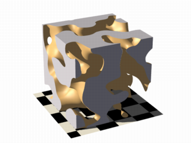
Note: the -0.5 is only there to make it match to the used threshold
value of 0, the f_noise3d function returns values between 0 and 1.
With this and the other functions you can generate objects similar to heightfields, having the advantage that a high resolution can be achieved without high memory requirements.
function { x + f_noise3d(0, y, z) }
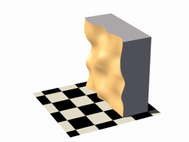
The noise function can of course also be subtracted which results in an 'inverted' version:
function { x - f_noise3d(0, y, z) }
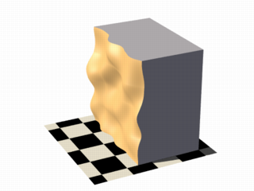
In the last two pictures we added the noise function to a plane function. The x-parameter was set to 0 so the noise function is constant in x-direction. This way we achieve the typical heightfield structure.
Of course we can also add noise to any other function. If the noise function is very strong this can result in several separated surfaces.
function { f_sphere(x, y, z, 1.2) - f_noise3d(x, y, z) }
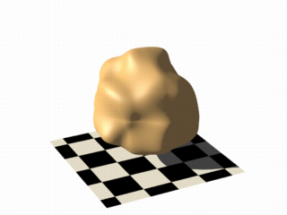
This is a noise function applied to a sphere surface, we can influence the intensity of the noise by multiplying it with a factor and change the scale by multiplying the coordinate parameters:
function { f_sphere(x, y, z, 1.6) - f_noise3d(x * 5, y * 5, z * 5) * 0.5 }
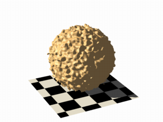
As alternative to noise functions we can also use any pigment in a function:
#declare fn_Pigm=function {
pigment {
agate
color_map {
[0 color rgb 0]
[1 color rgb 1]
}
}
}
This function is a vector function returning a (color) vector.For use in isosurface functions they must be
declared first. When using the identifier, you have to specify which component of the color vector should be used. To
do this, the dot notation is used: Function(x,y,z).red.
A color vector has five components. Supported dot types to access these components are:
x | F( ).u | F( ).red
y | F( ).v | F( ).green
z | F( ).blue
filter | F( ).t
transmit
gray
hf
function { f_sphere(x, y, z, 1.6)-fn_Pigm(x/2, y/2, z/2).gray*0.5 }
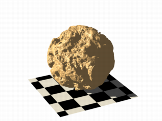
There are quite a lot of things possible with pigment functions, but you probably have recognized that this renders quite slow.
Conditional directives are allowed in functions:
#declare Rough = yes;
#include "functions.inc"
isosurface {
function { y #if(Rough=1)-f_noise3d(x/0.5,y/0.3,z/0.4)*0.8 #end }
...
}
Loops can also be used in functions:
#include "functions.inc"
#declare Thr = 1/1000;
#declare Ang = radians(45);
#declare Offset = 1.5;
#declare Scale = 1.2;
#declare TrSph = function { f_sphere(x-Offset,y,z,0.7*Scale) }
function {
(1-Thr)
#declare A = 0;
#while (A<8)
-pow(Thr, TrSph(x*cos(A*Ang) + y*sin(A*Ang),
y*cos(A*Ang) -x*sin(A*Ang), z) )
#declare A=A+1;
#end
}
Note: The loops and conditionals are evaluated at parse time, not at render time.
Transforming an isosurface object is done like transforming any POV-Ray object. Simply use the object modifiers (scale, translate, rotate, ...).
However, when you want to transform functions within the contained_by object, you have to substitute parameters in the functions.
The results seem inverted to what you would normally expect. Here is an explanation:
Take a
Sphere(x,y,z). We know it sits at the origin because x=0. When we want it at x=2 (translating 2 units to the right) we
need to write the second equation in the same form: x-2=0
Now that both equations equal 0, we can replace
parameter x with x-2
So our Sphere(x-2, y,z) moves two units to the right.
Let's scale our Sphere 0.5 in the y direction. Default size is y=1 (one unit). We want y=0.5.
To get this
equation in the same form as the first one, we have to multiply both sides by two. y*2 = 0.5*2, which gives y*2=1
Now
we can replace the y parameter in our sphere: Sphere(x, y*2, z). This squishes the y-size of the sphere by half.
Well,
this is the general idea of substitutions.
Here is an overview of some useful substitutions:
Using a declared object P(x,y,z)
Scale
scale x : replace "x" with "x/scale" (idem
other parameters)
scale x*2 gives P(x/2,y,z)
Scale Infinitely
scale x infinitely : replace "x" with "0"
(idem other parameters)
scale y infinitely gives P(x,0,z)
Translate
translate x : replace "x" with "x - translation"
(idem other parameters)
translate z*3 gives P(x,y,z-3)
Shear
shear in XY-plane : replace "x" with "x +
y*tan(radians(Angle))" (idem other parameters)
shear 45 degrees left gives P(x+y*tan(radians(45)), y, z)
Rotate
Note: these rotation substitutions work like normal POV-rotations: they already compensate for the inverse working
rotate around X
: replace "y" with "z*sin(radians(Angle)) +
y*cos(radians(Angle))"
: replace "z" with "z*cos(radians(Angle)) -
y*sin(radians(Angle))"
rotate around Y
: replace "x" with "x*cos(radians(Angle)) -
z*sin(radians(Angle))"
: replace "z" with "x*sin(radians(Angle)) +
z*cos(radians(Angle))"
rotate around Z
: replace "x" with "x*cos(radians(Angle)) +
y*sin(radians(Angle))"
: replace "y" with "-x*sin(radians(Angle)) +
y*cos(radians(Angle)) "
rotate z*75 gives:
P(x*cos(radians(75)) + y*sin(radians(75)),
-x*sin(radians(75)) + y*cos(radians(75)), z)
Flip
flip X - Y : replace "x" with "y" and
replace "y" with "-x"
flip Y - Z : replace "y" with "z" and replace "z"
with "-y"
flip X - Z : replace "x" with "-z" and replace "z"
with "x"
flip x and y gives P(y, -x, z)
Twist
twist N turns/unit around X
: replace "y" with
"z*sin(x*2*pi*N) + y*cos(x*2*pi*N)"
: replace "z" with "z*cos(x*2*pi*N)
- y*sin(x*2*pi*N)"
To optimize the approximation of the isosurface and to get maximum rendering speed it is important to adapt certain values;
accuracy
The accuracy value influences how accurate the surface geometry is calculated. Lower values lead to a more precise,
but slower result. The default value of 0.001 is fairly low. We used this value in all the previous
samples, but often you can raise this quite a lot and thereby make things faster.
max_gradient
For finding the actual surface it is important for POV-Ray to know the maximum gradient of the function, meaning
how fast the function value changes. We can specify a value with the max_gradient keyword. Lower
max_gradient values lead to faster rendering, but if the specified value is below the actual maximum gradient of the
function, there can be holes or other artefacts in the surface.
For the same reason functions with infinite gradient should not be used. This applies for pigment functions with
brick or checker pattern for example. You should also be careful when using select() in isosurface
functions because of this.
If the real maximum gradient differs too much from the specified value POV-Ray prints a warning together with the
found maximum gradient. It is usually sufficient to use this number for the max_gradient parameter to get
fast and correct results.
POV-Ray can also dynamically change the max_gradient when you specify evaluate with 3
parameters the isosurface definition. Concerning the details on this and other things see the evaluate
in the reference section.
contained_by
Make sure your contained_by 'object' fits as tightly as possible. An oversized container can
sky-rocket the render time.
When the container has a lot of empty space around the actual isosurface, POV-Ray has
to do a lot of superfluous sampling: especially with complex functions this can become very time consuming. On top of
this, the max_gradient needed to get a proper surface will also increase rapidly (almost proportional to
the oversize!).
You could use a transparent copy of the container (using exactly the same transformations) to
check how it fits. Getting the min_extent and max_extent of the isosurface is
not useful because it only gives the extent of the container and not of the actual isosurface.
The polynomial object (and its "shortcut" versions: cubic,
quartic and quadric)
of POV-Ray is one of the most complex and mathematical primitives of the program. One could think that it is seldom
used and more or less obsolete, but we have to remember that for example the torus primitive is just a shortcut for
the equivalent quartic, which is just a shortcut for the equivalent poly object. Polys are,
however, seldom used in scenes due to the fact that they are so difficult to define and it is far from trivial to get
the desired shape with just a polynomial equation. It is mostly used by the most mathematically oriented POV-Ray
users.
This tutorial explains the process of making a polynomial object in POV-Ray.
Note:Since version 3.5, POV-Ray includes the new isosurface object which
makes the polynomial object more or less obsolete. The isosurface is more versatile (you can specify any mathematical
function, not just polynomials), easier to use. You can write the function as is, without needing to put values in a
gigantic vector. Isosurfaces often render considerably faster than equivalent polys.
However, the most mathematically oriented still like polys because isosurfaces are calculated just by approximating the right value, while the poly is calculated in a mathematically exact way. Usually isosurfaces are more than good enough for most applications, though.
Note: at maximum a 15th degree polynomial can be represented with the poly object. If a higher degree polynomial or other non-polynomial function has to be represented, then it is necessary to use the isosurface object.
The first step is to create the polynomial function to be represented. You will need some (high-school level) mathematical knowledge for this.
1) Let's start with an easy example: A sphere.
The sphere function is:
Now we have to convert this to polynomial form:
We will need a polynomial of the 2nd degree to represent this.
2) A more elaborated example:
Let's take the function:
Converting this to polynomial form we get:
Although the highest power is 4 we will need a 5th order polynomial to represent this function (because we cannot represent y4z with a 4th order polynomial).
3) And since we talked about the torus, let's also take it as an example.
A torus can be represented with the function:
where r1 is the major radius and r2 is the minor radius.
Now, this is tougher to convert to polynomial form, but finally we get:
A 4th order polynomial is enough to represent this.
Note: not every function can be represented in polynomial form. Only functions that use addition (and substraction), multiplication (and division) and scalar powers (including rational powers, eg. the square root) can be represented. Also, the poly primitive supports only polynomials of the 7th degree at max.
Converting a function to polynomial form may be a very laborious task for certain functions. Some mathematical programs are very helpful in this matter.
Now that we have the function in polynomial form, we have to write it in POV-Ray syntax. The syntax is specified in the in the chapters "Poly, Cubic and Quartic" and "Quadric" of the SDL section. There is also a table in this chapter which we will be using to make the polynomial vector. It is easier to have this table printed on paper.
Note: It is also possible to make a little program with your favorite programming language which will print the poly vector from the polynomial function, but making a program like this is up to you.
1) Let's start with the easy one, ie. the sphere.
Since the sphere can be represented with a polynomial of 2nd degree, we look at the row titled "2nd" in the table. We see that it has 10 items, ie. we need a vector of size 10. Each item of the vector will be the factor of the term listed in the table.
The polynomial was:
Writing the poly in this way we get:
#declare Radius=1;
poly
{ 2,
<1,0,0,0,1,
0,0,1,0,-Radius*Radius>
}
Put each group of factors (separated with lines in the table) in their own lines.
In the table we see that the first item is the factor for x2, which is 1 in the function. The next item is xy. Since it is not in the function, its factor is 0. Likewise the next item, which is xz. And so on. The last item is the scalar term, which is in this case -r2.
If we make a proper scene and render it, we get:
camera { location y*4-z*5 look_at 0 angle 35 }
light_source { <100,200,-50> 1 }
background { rgb <0,.25,.5> }
#declare Radius=1;
poly
{ 2,
<1,0,0,0,1,
0,0,1,0,-Radius*Radius>
pigment { rgb <1,.7,.3> } finish { specular .5 }
}
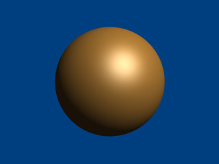
Note: there is a shortcut for 2nd degree polynomials: The quadric
primitive. Using a shortcut version, whenever possible, can lead to faster renderings. We can write the sphere code
described above in the following way:
quadric
{ <1,1,1>, <0,0,0>, <0,0,0>, -Radius*Radius
pigment { rgb <1,.7,.3> } finish { specular .5 }
}
2) Now lets try the second one. We do it similarly, but this time we need to look at the row titled "5th" in the table.
The polynomial was:
Writing the poly primitive we get:
poly
{ 5,
<0,0,0,0,0,
0,0,0,0,0,
0,0,0,0,0,
0,0,0,1,0,
0,0,0,0,0,
-2,0,0,0,0,
0,0,0,0,0,
0,1,0,0,0,
0,0,0,0,0,
0,0,0,0,0,
0,0,0,0,0,0>
}
With the proper scene we get:
camera { location <8,20,-10>*.7 look_at x*.01 angle 35 }
light_source { <100,200,20> 1 }
background { rgb <0,.25,.5> }
poly
{ 5,
<0,0,0,0,0,
0,0,0,0,0,
0,0,0,0,0,
0,0,0,1,0,
0,0,0,0,0,
-2,0,0,0,0,
0,0,0,0,0,
0,1,0,0,0,
0,0,0,0,0,
0,0,0,0,0,
0,0,0,0,0,0>
clipped_by { box { <-4,-4,-1><4,4,1> } }
bounded_by { clipped_by }
pigment { rgb <1,.7,.3> } finish { specular .5 }
rotate <0,90,-90>
}
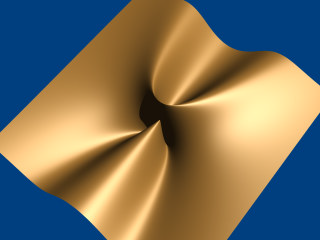
3) And finally the torus:
The polynomial was:
And we get the proper 4th degree poly primitive:
camera { location y*4-z*5 look_at 0 angle 35 }
light_source { <100,200,-50> 1 }
background { rgb <0,.25,.5> }
#declare r1=1;
#declare r2=.5;
poly
{ 4,
<1,0,0,0,2,
0,0,2,0,-2*(r1*r1+r2*r2),
0,0,0,0,0,
0,0,0,0,0,
1,0,0,2,0,
2*(r1*r1-r2*r2),0,0,0,0,
1,0,-2*(r1*r1+r2*r2),0,pow(r1,4)+pow(r2,4)-2*r1*r1*r2*r2>
pigment { rgb <1,.7,.3> } finish { specular .5 }
}
When rendered we get:
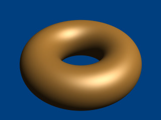
There is a shortcut for 4th order polynomials: The quartic
primitive. We can write the torus like this:
quartic
{ <1,0,0,0,2,
0,0,2,0,-2*(r1*r1+r2*r2),
0,0,0,0,0,
0,0,0,0,0,
1,0,0,2,0,
2*(r1*r1-r2*r2),0,0,0,0,
1,0,-2*(r1*r1+r2*r2),0,pow(r1,4)+pow(r2,4)-2*r1*r1*r2*r2>
pigment { rgb <1,.7,.3> } finish { specular .5 }
}
Sometimes we want to make an object that does not have perfectly sharp edges like a box does. Then, the
superquadric ellipsoid shape made by the superellipsoid is a useful object. It is described by the simple
syntax:
superellipsoid { <Value_E, Value_N >}
Where Value_E and Value_N are float values greater than zero and less than or equal to one. Let's
make a superellipsoid and experiment with the values of Value_E and Value_N to see what kind of
shapes we can make. We create a file called supellps.pov and edit it as follows:
#include "colors.inc"
camera {
location <10, 5, -20>
look_at 0
angle 15
}
background { color rgb <.5, .5, .5> }
light_source { <10, 50, -100> White }
The addition of a gray background makes it a little easier to see our object. We now type:
superellipsoid { <.25, .25>
pigment { Red }
}
We save the file and trace it at 200x150 -A to see the shape. It will look like a box, but the edges
will be rounded off. Now let's experiment with different values of Value_E and Value_N. For the
next trace, try <1, 0.2>. The shape now looks like a cylinder, but the top edges are rounded. Now try <0.1,
1>. This shape is an odd one! We do not know exactly what to call it, but it is interesting. Finally, let's try
<1, 1>. Well, this is more familiar... a sphere!
There are a couple of facts about superellipsoids we should know. First, we should not use a value of 0 for either Value_E nor Value_N. This will cause POV-Ray to incorrectly make a black box instead of our desired shape. Second, very small values of Value_E and Value_N may yield strange results so they should be avoided. Finally, the Sturmian root solver will not work with superellipsoids.
Superellipsoids are finite objects so they respond to auto-bounding and can be used in CSG.
Now let's use the superellipsoid to make something that would be useful in a scene. We will make a tiled floor and place a couple of superellipsoid objects hovering over it. We can start with the file we have already made.
We rename it to tiles.pov and edit it so that it reads as follows:
#include "colors.inc"
#include "textures.inc"
camera {
location <10, 5, -20>
look_at 0
angle 15
}
background { color rgb <.5, .5, .5> }
light_source{ <10, 50, -100> White }
Note: we have added #include "textures.inc" so we can use
pre-defined textures. Now we want to define the superellipsoid which will be our tile.
#declare Tile = superellipsoid { <0.5, 0.1>
scale <1, .05, 1>
}
Superellipsoids are roughly 2*2*2 units unless we scale them otherwise. If we wish to lay a bunch of our tiles side by side, they will have to be offset from each other so they do not overlap. We should select an offset value that is slightly more than 2 so that we have some space between the tiles to fill with grout. So we now add this:
#declare Offset = 2.1;
We now want to lay down a row of tiles. Each tile will be offset from the original by an ever-increasing amount in
both the +z and -z directions. We refer to our offset and multiply by the tile's rank to determine the position of
each tile in the row. We also union these tiles into a single object called Row like this:
#declare Row = union {
object { Tile }
object { Tile translate z*Offset }
object { Tile translate z*Offset*2 }
object { Tile translate z*Offset*3 }
object { Tile translate z*Offset*4 }
object { Tile translate z*Offset*5 }
object { Tile translate z*Offset*6 }
object { Tile translate z*Offset*7 }
object { Tile translate z*Offset*8 }
object { Tile translate z*Offset*9 }
object { Tile translate z*Offset*10 }
object { Tile translate -z*Offset }
object { Tile translate -z*Offset*2 }
object { Tile translate -z*Offset*3 }
object { Tile translate -z*Offset*4 }
object { Tile translate -z*Offset*5 }
object { Tile translate -z*Offset*6 }
}
This gives us a single row of 17 tiles, more than enough to fill the screen. Now we must make copies of the Row
and translate them, again by the offset value, in both the +x and -x directions in ever increasing amounts in the same
manner.
object { Row }
object { Row translate x*Offset }
object { Row translate x*Offset*2 }
object { Row translate x*Offset*3 }
object { Row translate x*Offset*4 }
object { Row translate x*Offset*5 }
object { Row translate x*Offset*6 }
object { Row translate x*Offset*7 }
object { Row translate -x*Offset }
object { Row translate -x*Offset*2 }
object { Row translate -x*Offset*3 }
object { Row translate -x*Offset*4 }
object { Row translate -x*Offset*5 }
object { Row translate -x*Offset*6 }
object { Row translate -x*Offset*7 }
Finally, our tiles are complete. But we need a texture for them. To do this we union all of the Rows
together and apply a White Marble pigment and a somewhat shiny reflective surface to it:
union{
object { Row }
object { Row translate x*Offset }
object { Row translate x*Offset*2 }
object { Row translate x*Offset*3 }
object { Row translate x*Offset*4 }
object { Row translate x*Offset*5 }
object { Row translate x*Offset*6 }
object { Row translate x*Offset*7 }
object { Row translate -x*Offset }
object { Row translate -x*Offset*2 }
object { Row translate -x*Offset*3 }
object { Row translate -x*Offset*4 }
object { Row translate -x*Offset*5 }
object { Row translate -x*Offset*6 }
object { Row translate -x*Offset*7 }
pigment { White_Marble }
finish { phong 1 phong_size 50 reflection .35 }
}
We now need to add the grout. This can simply be a white plane. We have stepped up the ambient here a little so it looks whiter.
plane {
y, 0 //this is the grout
pigment { color White }
finish { ambient .4 diffuse .7 }
}
To complete our scene, let's add five different superellipsoids, each a different color, so that they hover over our tiles and are reflected in them.
superellipsoid {
<0.1, 1>
pigment { Red }
translate <5, 3, 0>
scale .45
}
superellipsoid {
<1, 0.25>
pigment { Blue }
translate <-5, 3, 0>
scale .45
}
superellipsoid {
<0.2, 0.6>
pigment { Green }
translate <0, 3, 5>
scale .45
}
superellipsoid {
<0.25, 0.25>
pigment { Yellow }
translate <0, 3, -5>
scale .45
}
superellipsoid {
<1, 1>
pigment { Pink }
translate y*3
scale .45
}
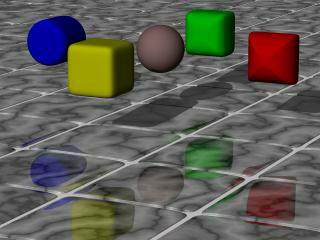
We trace the scene at 320x200 -A to see the result. If we are happy with that, we do a final trace at
640x480 +A0.2.
More about "User-Defined Functions"
More about "Declaring Functions"
More about "internal functions"
More about "normal{} statement"
|
|
2.3.2 Polygon Based Shapes | 2.3.3 Other Shapes | 2.3.4 Advanced Texture Options |
|